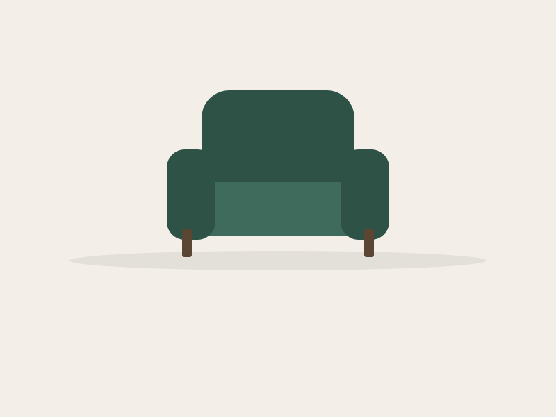
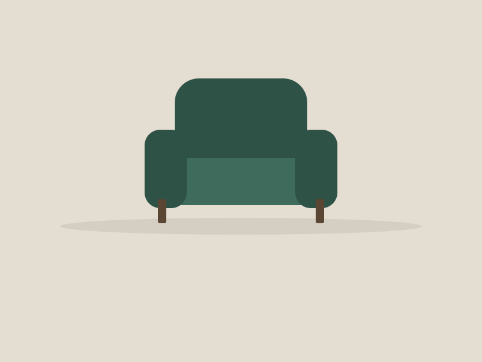

Chair
Halden Wingback Armchair
€890.00
Item no. NH-2003
A modern take on the classic wingback. High back, soft headrest and a forest-green velvet cover.
Dimensions
- Width: 80 cm
- Depth: 88 cm
- Height: 105 cm
- Seat height: 44 cm
Material & Construction
- Frame: solid pine and plywood
- Suspension: sinuous springs
- Upholstery: cotton velvet, forest green
- Legs: black stained ash
Features & Feel
- Supportive high back
- Soft velvet with a gentle sheen